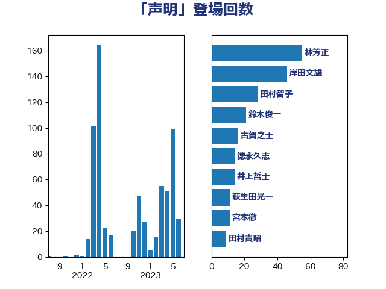

単語「声明」

| 林芳正 | 自由民主党 | 55 回 |
| 岸田文雄 | 自由民主党 | 46 回 |
| 田村智子 | 日本共産党 | 28 回 |
| 鈴木俊一 | 自由民主党 | 21 回 |
| 古賀之士 | 立憲民主党 | 16 回 |
| 徳永久志 | 無所属 | 14 回 |
| 井上哲士 | 日本共産党 | 14 回 |
| 萩生田光一 | 自由民主党 | 11 回 |
| 宮本徹 | 日本共産党 | 11 回 |
| 田村貴昭 | 日本共産党 | 9 回 |
| 柳ヶ瀬裕文 | 日本維新の会 | 8 回 |
| 有村治子 | 自由民主党 | 8 回 |
| 長妻昭 | 立憲民主党 | 7 回 |
| 西村康稔 | 自由民主党 | 7 回 |
| 細田健一 | 自由民主党 | 7 回 |
| 山添拓 | 日本共産党 | 7 回 |
| 天畠大輔 | れいわ新選組 | 7 回 |
| 高良鉄美 | 無所属 | 6 回 |
| 牧義夫 | 立憲民主党 | 6 回 |
| 杉本和巳 | 日本維新の会 | 6 回 |
| 本村伸子 | 日本共産党 | 6 回 |
| 新垣邦男 | 立憲民主党 | 6 回 |
| 高橋光男 | 公明党 | 5 回 |
| 青柳仁士 | 日本維新の会 | 5 回 |
| 野村哲郎 | 自由民主党 | 5 回 |
| 紙智子 | 日本共産党 | 5 回 |
| 平将明 | 自由民主党 | 5 回 |
| 岬麻紀 | 日本維新の会 | 5 回 |
| 小田原潔 | 自由民主党 | 5 回 |
| 鈴木敦 | 国民民主党 | 4 回 |
| 鈴木宗男 | 日本維新の会 | 4 回 |
| 江藤拓 | 自由民主党 | 4 回 |
| 山本博司 | 公明党 | 4 回 |
| 小池晃 | 日本共産党 | 4 回 |
| 太田房江 | 自由民主党 | 4 回 |
| 大石あきこ | れいわ新選組 | 4 回 |
| 青木愛 | 立憲民主党 | 3 回 |
| 道下大樹 | 立憲民主党 | 3 回 |
| 篠原豪 | 立憲民主党 | 3 回 |
| 窪田哲也 | 公明党 | 3 回 |
| 永岡桂子 | 自由民主党 | 3 回 |
| 杉田水脈 | 自由民主党 | 3 回 |
| 平木大作 | 公明党 | 3 回 |
| 山田勝彦 | 立憲民主党 | 3 回 |
| 山下芳生 | 日本共産党 | 3 回 |
| 小野田紀美 | 自由民主党 | 3 回 |
| 小西洋之 | 立憲民主党 | 3 回 |
| 小林鷹之 | 自由民主党 | 3 回 |
| 宮本岳志 | 日本共産党 | 3 回 |
| 太栄志 | 立憲民主党 | 3 回 |
| 大家敏志 | 自由民主党 | 3 回 |
| 堀井巌 | 自由民主党 | 3 回 |
| 伊藤岳 | 日本共産党 | 3 回 |
| 高市早苗 | 自由民主党 | 2 回 |
| 馬淵澄夫 | 立憲民主党 | 2 回 |
| 音喜多駿 | 日本維新の会 | 2 回 |
| 赤嶺政賢 | 日本共産党 | 2 回 |
| 谷公一 | 自由民主党 | 2 回 |
| 西岡秀子 | 国民民主党 | 2 回 |
| 蓮舫 | 立憲民主党 | 2 回 |
| 笠井亮 | 日本共産党 | 2 回 |
| 空本誠喜 | 日本維新の会 | 2 回 |
| 穀田恵二 | 日本共産党 | 2 回 |
| 石井浩郎 | 自由民主党 | 2 回 |
| 田名部匡代 | 立憲民主党 | 2 回 |
| 河西宏一 | 公明党 | 2 回 |
| 江田憲司 | 立憲民主党 | 2 回 |
| 櫛渕万里 | れいわ新選組 | 2 回 |
| 横沢高徳 | 立憲民主党 | 2 回 |
| 森本真治 | 立憲民主党 | 2 回 |
| 本田太郎 | 自由民主党 | 2 回 |
| 木村英子 | れいわ新選組 | 2 回 |
| 掘井健智 | 日本維新の会 | 2 回 |
| 打越さく良 | 立憲民主党 | 2 回 |
| 山崎誠 | 立憲民主党 | 2 回 |
| 小沼巧 | 立憲民主党 | 2 回 |
| 守島正 | 日本維新の会 | 2 回 |
| 塩川鉄也 | 日本共産党 | 2 回 |
| 和田有一朗 | 日本維新の会 | 2 回 |
| 吉良よし子 | 日本共産党 | 2 回 |
| 前原誠司 | 国民民主党 | 2 回 |
| 仁比聡平 | 日本共産党 | 2 回 |
| 上田清司 | 国民民主党 | 2 回 |
| 齋藤健 | 自由民主党 | 1 回 |
| 高橋千鶴子 | 日本共産党 | 1 回 |
| 高橋克法 | 自由民主党 | 1 回 |
| 高木宏壽 | 自由民主党 | 1 回 |
| 馬場雄基 | 立憲民主党 | 1 回 |
| 阿部知子 | 立憲民主党 | 1 回 |
| 鎌田さゆり | 立憲民主党 | 1 回 |
| 鈴木貴子 | 自由民主党 | 1 回 |
| 鈴木庸介 | 立憲民主党 | 1 回 |
| 金子恭之 | 自由民主党 | 1 回 |
| 野田佳彦 | 立憲民主党 | 1 回 |
| 野中厚 | 自由民主党 | 1 回 |
| 重徳和彦 | 立憲民主党 | 1 回 |
| 辻元清美 | 立憲民主党 | 1 回 |
| 足立康史 | 日本維新の会 | 1 回 |
| 赤木正幸 | 日本維新の会 | 1 回 |
| 谷合正明 | 公明党 | 1 回 |
| 若松謙維 | 公明党 | 1 回 |
| 舩後靖彦 | れいわ新選組 | 1 回 |
| 臼井正一 | 自由民主党 | 1 回 |
| 緒方林太郎 | 無所属 | 1 回 |
| 米山隆一 | 立憲民主党 | 1 回 |
| 竹内真二 | 公明党 | 1 回 |
| 福重隆浩 | 公明党 | 1 回 |
| 福島みずほ | 社会民主党 | 1 回 |
| 福山哲郎 | 立憲民主党 | 1 回 |
| 石橋通宏 | 立憲民主党 | 1 回 |
| 石垣のりこ | 立憲民主党 | 1 回 |
| 石井正弘 | 自由民主党 | 1 回 |
| 熊谷裕人 | 立憲民主党 | 1 回 |
| 湯原俊二 | 立憲民主党 | 1 回 |
| 渡辺周 | 立憲民主党 | 1 回 |
| 清水貴之 | 日本維新の会 | 1 回 |
| 浜田聡 | NHK党 | 1 回 |
| 浅田均 | 日本維新の会 | 1 回 |
| 池下卓 | 日本維新の会 | 1 回 |
| 水岡俊一 | 立憲民主党 | 1 回 |
| 梅谷守 | 立憲民主党 | 1 回 |
| 梅村聡 | 日本維新の会 | 1 回 |
| 柳本顕 | 自由民主党 | 1 回 |
| 松本剛明 | 自由民主党 | 1 回 |
| 松川るい | 自由民主党 | 1 回 |
| 松原仁 | 立憲民主党 | 1 回 |
| 早稲田ゆき | 立憲民主党 | 1 回 |
| 早坂敦 | 日本維新の会 | 1 回 |
| 後藤茂之 | 自由民主党 | 1 回 |
| 庄子賢一 | 公明党 | 1 回 |
| 川田龍平 | 立憲民主党 | 1 回 |
| 岩渕友 | 日本共産党 | 1 回 |
| 山本有二 | 自由民主党 | 1 回 |
| 山井和則 | 立憲民主党 | 1 回 |
| 宮本周司 | 自由民主党 | 1 回 |
| 大野敬太郎 | 自由民主党 | 1 回 |
| 大串博志 | 立憲民主党 | 1 回 |
| 國重徹 | 公明党 | 1 回 |
| 吉良州司 | 無所属 | 1 回 |
| 吉田統彦 | 立憲民主党 | 1 回 |
| 吉田宣弘 | 公明党 | 1 回 |
| 北村経夫 | 自由民主党 | 1 回 |
| 加藤勝信 | 自由民主党 | 1 回 |
| 八木哲也 | 自由民主党 | 1 回 |
| 倉林明子 | 日本共産党 | 1 回 |
| 仁木博文 | 無所属 | 1 回 |
| 井出庸生 | 自由民主党 | 1 回 |
| 井上英孝 | 日本維新の会 | 1 回 |
| 串田誠一 | 日本維新の会 | 1 回 |
| 中川宏昌 | 公明党 | 1 回 |
| 上田勇 | 公明党 | 1 回 |
| 三浦信祐 | 公明党 | 1 回 |